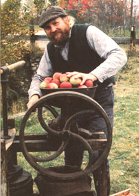
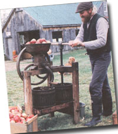
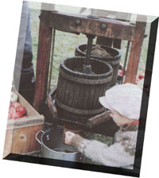
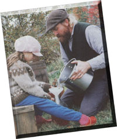
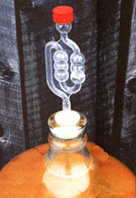
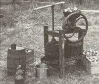

Growing Apples For Homemade Cider
Don't settle for thin, pasteurized, store-bought apple cider. Homemade cider is cheaper and infinitely more refreshing.
By Michael Phillips
December/January 1994
Let the apple cider renaissance begin! Bring forth the jugglers of Newton Pippins. Roll out the barrels of pomological splendor. Squeeze the bland and insipid back into the Red Delicious whence it came. Americans are set to rediscover colonial notions of good apple cider.
The History of Apple Cider
Cider is a word that means different things to different people. Its root meaning, from the Old French sidre, is "the fermented juice of the apple." Go anywhere in Europe and ask for cider and it will be alcoholic to the last drop. Our colonial forebears here in North America desired nothing less of their first cider than a warming taste to get through a long winter. "Hard cider" came into vogue as a means of distinguishing the first pressed juice of the apple - today's "sweet cider"- from the fermented brew that once flowed by the barrelful. Changing the term "fermented" to "fermentable" ends this ambiguity, and settles the commercial debate of whether apple juice that's been heat-treated or had chemical preservatives added is still cider. Federal regulations somewhat skirt this issue by empowering the word "fresh" to give consumers assurance of purchasing a true apple cider. But be warned: all apple juice sold today as cider isn't necessarily "fresh" cider.
Even without such linguistic meandering, cider is still far from the rich drink enjoyed a century or more ago. Varietal blends have fallen by the wayside along with a once-vibrant regional agriculture. Small farm orchards have been consolidated into an "apple industry" that favors but few of the varietal thousands. The best cider is made from a blend of apples that balances sweetness with tang and body with clarity. However, many good cider varieties are no longer grown in commercial orchards because today's apple profits lie with dessert-quality fruit. The dropped apples and graded culls that now go into store cider and juice blends do not have nearly the value of dessert fruit, and orchardists need 80 percent or more of their crop in this latter category to survive economically. Cider has essentially become a waste product in a country where it was once the treasured national beverage.
Where once grocers chose from 20 to 30 regional favorites, the apple varieties available in supermarkets today are limited to but three or four,. What can we say of a society that apparently supports a greater choice of paper towel brands than apple varieties? I've even heard it said at one industry meeting that commercial cider makers are better off not blending their insipid juices, as the juices in a blended cider might dare to separate (by density) on the grocer's shelf. Taste, as anyone who's eaten a tough winter tomato can affirm, is sacrificed to such commercial "perfection."
Happily, interest in regional fruits has been increasing among both backyard gardeners and smaller commercial orchardists, and you need no longer be held hostage to the few cider blends available in the grocery store. Making your own "juice of the apple" will not only do your palette a tremendous favor, but give you an entirely new idea of what America really tastes like.
Gathering Your Apple Varieties
The road to cider ambrosia begins with the varieties of apples available to be pressed. You can grow those apples, purchase them from nearby orchards, or take to the countryside and explore abandoned farmsteads and hedgerows in search of palatable fruit. Wild apples, in offering something more than the bland sweetness of today's commercial favorites, have a place in a robust cider blend.
Trees found growing near abandoned stone foundations or in now-neglected orchards are a good source of these old-time cider apples. Large-trunked trees set at a consistent spacing indicate grafted origins. The seedling trees sprouting under the drip line are likely windfallen progeny of the mother variety, and any bearing fruit should be tasted with that genetic potential in mind. Local orchards often grow a wider range of apple varieties than commonly found in the supermarket. Pick-your-own operations will guide you to the ripest fruit, but purchasing "orchard run" apples by the bushel spares you picking labor and saves on the price of graded fruit. The best cider apple deal is found in bins of windfallen fruit, but even handselecting drops like these won't suit the discriminating cider maker.
You should be just as gentle picking apples for cider purposes as you are with dessert-quality fruit. A good picking rhythm-once you have the basics down - is no slower than a bruise-and-batter technique. And, as you'll soon learn, the best cider is made after "sweating" the apples for a week or two. Unnecessary bruises have that much more time to decay. Heavily bruised apples essentially make a bruised cider, in which fermentation has begun even before the fruit has been pressed.
Old-time cider makers insisted on pressing sound, ripe apples only. It was said that an apple that reached the ground imparted an earthy flavor to the cider. My own prejudices against windfallen fruit don't go quite that far, but as a nation, our standards for an acceptable cider apple have undergone quite a decline. J.M. Trowbridge stated his position emphatically in The Cider Maker's Handbook in 1903: "Whoever thinks that any apple is good enough for cider had better not engage in the business."
Dropped apples for cider are suspect as well in the recently published scare about E. coli bacteria in cider. It was always thought cider was too acidic to harbor this bacterium, which, in tainted meat, has made people sick enough to die. E. coli can only be present if the apples used for cider have been in contact with "hoofed and horned" animal droppings (mice, for once, are not a concern). A conscientious cider maker would never use fallen apples gathered in a pasture, but no apple grower can assure that deer won't find ways into the orchard. Rinsing apples down with a hose isn't necessarily an effective wash. Quality goes hand in hand with safety if all the apples being pressed have been picked directly from the tree.
Apple varieties ripen at different points in the harvest season, and some varieties ripen unevenly on the same tree over the course of several weeks. The seeds of a ripe apple will have begun to turn brown: cut one open for a look. "Spot picking" the best colored fruit on the outside canopy of the tree allows the sunlight to reach in and color the inner apples for picking two weeks or so later. Apples that aren't yet ripe make a green-tasting cider, and once overmature, if they haven't dropped, press out a less zesty juice.
Cider apples should be set aside to "sweat" until you have an assortment of varieties ready to press. The woodshed or porch is a good odor-free spot, out of the scalding sun and protected enough from a deep freeze. Our cider apples are set aside by variety in bushel boxes for two weeks or so before pressing. The apples yield their juices more readily after this mellowing, and the flavor of the cider is fuller. When a good firm squeeze leaves finger indentations on the fruit, it's ready for grinding. Some apples varieties - Rome, Jonathan, and Newton come to mind - are best pressed ripe from the tree, as their juices begin to bitter after storage.
Many cider-making handbooks will tell you to thoroughly wash your fruit before pressing. If you're taking the bruised and stubble-spiked route of windfallen fruit, I heartily agree. Blasting the apples with a garden hose in an old washtub (with holes drilled to allow good drainage) works well. Pull any rotting fruit you see, and stay away from those pasture drops! There's no need though, to wash hand-picked organic fruit that never came in contact with the ground. What to do with fruit sprayed with chemicals is a personal decision. One or two low-impact sprays done early in the summer have probably been sufficiently rinsed by the rain. Then again, I know of people who cut away both the stem and calyx end of the apple where residues are more likely to stay behind.
The Cider Press: Screw-Pressing Basics
Choose a cool day to press your cider outside - lower temperatures reduce the risk of vinegar bacteria and just may keep those pesky yellow jackets at bay. All of your cider equipment should be clean: make sure it's scrubbed and rinsed down thoroughly with clean water (no soap) after each day's pressing. Vinegar bacteria and fruit flies quickly take up residence where good sanitation is lacking.
Get the flywheel on your press turning to speed before dumping the apples into the grinder hopper. Grinders are designed to be self-feeding, so there's no need to get off-flavored fingers anywhere near the rotating cylinder. A nylon press bag placed in the tub catches the mushy pomace as it comes down through the grinder. The press bag serves as a filter to keep seeds and bits of apple from flowing out with the juice. Once full, fold the bag closed and place the wooden pressing disk in position.
Turn the screw slowly to apply pressure to the pulp. A stainless steel, enamel, or plastic pot should be in position beneath the tray to catch the cider flow, with enough capacity on hand to contain at least three gallons of juice. David Crooks, sales manager at Happy Valley Ranch, advises, "Make a quarter- to half-turn at a time and let the juice flow out naturally. Too quick a press results in a cloudy juice, and you'll get less of it." Stop turning the screw when you encounter solid resistance, as what little juice left in the pomace isn't worth overstressing the press frame to get. Expect to take twenty minutes or so each go-around. The final juice blends all the varietal tastes in a way that the first irresistible gush of cider may not.
Custom pressing at a cider mill is a good option for families with lots of apples but no press of their own. Here in Lost Nation, we ask people to call ahead for an appointment to press a minimum of eight bushels of apples into a custom tank. Golfball-size fruit is rejected, as it tends to clog the conveyor leading up to the grinder above the press. You get the juice from your apples, whatever the blend. We charge seventy-five cents a gallon, and another quarter per gallon jug if you need containers. Some mills charge a little more than this, others a little less. Custom pressing is not only an irresistible family outing in the early cold season but one that keeps the colonial tradition of a community mill works alive.
Making Cider: Processing All Those Apples!
At two to three gallons to the bushel, harvesting even a few trees eventually leads to a copious amount of cider. The more select apples go to storage for fresh eating. A considerable root cellar may give you the option of storing end-of-the-season cider apples as well, to be pressed out on a weekly basis through the rest of the winter months. Still, most of us will want to get the job done in two or three press days, and the earlier apples demand it. The question now: what to do with all that cider?
High-volume customers at our mill are good for five gallons of sweet cider every two weeks. My own personal consumption isn't quite there, as the laxative effect of cider on the human stomach sets a limit on this pleasure. One can only drink so much fresh cider! Sweet cider kept cold is good for drinking one to two weeks after pressing (depending on the cleanliness of your press) and perhaps two weeks more for those with some fizz tolerance.
Cider begins to turn fizzy as the natural yeasts in the juice begin to convert the apple sugars to alcohol. We're still a good way from a noticeably alcoholic cider at this point, though many of the charming ladies who come to our mill after church on Sundays suspect me on this. But more on hard cider in a bit. My own preference is to let cider mellow for a few days in either the refrigerator or a cool cellar to enjoy it at its optimum. Carbon dioxide production - an honest man would admit this to be yeast flatulence-kicks into high gear after several weeks regardless of keeping temperature, and then fizzy cider becomes too strong for all but the most obstinate cider head.
Freshly pressed cider freezes incredibly well. The taste after the thaw is nearly indistinguishable from that of those glorious fall days when the juice was pressed. The secrets of a good result are but two: don't let the cider sit around for a few days before freezing, and pour out one and a half inches from a full jug before placing it upright in the freezer. Cider expands when frozen, and that airspace keeps tops from blowing. Freeze your cider in plastic jugs rather than glass bottles to prevent a lateral expansion burst. Frozen cider is at its best if thawed before next year's harvest comes pouring off the press.
I put up most of our year's supply of apple juice on the canning shelves. Space in our small chest freezer is at a premium, and the peas and berries of summer leave room for just a few jugs of frozen cider. Luckily, fresh cider becomes juice in just the time it takes to heat it to 170 degrees Fahrenheit and keep it at that temperature for 10 minutes. Be sure to use a stainless steel or enamel pot, which won't react with the cider and cause a metallic taste. Heating to a higher temperature is a mistake, despite what the more conservative processing books advise: the yeasts and bacteria of concern are killed off at 170 degrees Fahrenheit, but nutritional value and flavor is not fully precipitated out. This heat treatment prevents the cider from fermenting. The hot juice is then simply poured into hot, sterilized canning jars to within half an inch of the top and the sterilized lids screwed down. Apple juice stored in a cool, dark place will keep almost indefinitely.
Homemade apple juice is as good as the cider used to make it, though admittedly the tangy effervescence of cider is lost in heating. The apple juice in grocery stores, generally being made of a bland cider, is rather bland itself. Kids taste this difference quickly, and if you've found them not drinking the cheap store brand, give `em a shot at your orchard's best.
Apple Cider Jelly
Cider can also be boiled down much the same as maple sap in the making of maple syrup. The natural pectin found in the apple leads this evaporation to a jellied end, however. A true New England cider jelly comes "fully puckered," with no sugar added to lessen the tangy apple flavor.
Boil down fresh cider in a stainless steel pot as rapidly as possible till it approaches the jelly boiling point of 220°F. The hot cider will "sheet" off a testing spoon in a continuous lip when it reaches the jelly stage. Pour it into hot, sterilized jars and secure with sterilized lids. One gallon of cider will be reduced to just over two eightounce jars of jelly. Apple molasses - the syrupy stage of boiled cider - may result if the apples used for cider had a low pectin content or if you didn't evaporate the cider far enough. Wild or crab ap ples in the cider blend help ensure a good set. Don't be disappointed with apple molasses though - it lends itself wonder fully to Shaker boiled cider pie or as a perfect glaze on roast duck or ham.
Making Hard Cider
There was a time when farmers deemed their winter supplies incomplete until several barrels of cider were stored in the cellar. Freezing sweet cider in plastic jugs in the 1700s and 1800s wasn't an option, nor would anyone have given a hoot for pasteurized juice. These were the days when cider had but one connotation-hard cider. Britons never gave up their pints of scrumpy, nor the French their champagne cider, but here in the States popular interest in hard cider is just renewing.
Not that we'll ever return to the voluminous days of colonial consumption. One settlement of 40 families near Boston put away three thousand barrels of cider for the winter of 1721. Cider was as good as cash in the barter economy of the day. One diary from 1805 records trading a half-barrel of cider for a child's schooling. Cider was considered good for one's constitution, and even President John Quincy Adams started his day with a glass or two. Cider's popularity and moderate alcohol content (averaging 6 percent) created a schism in the growing temperance movement in the early nineteenth century-while some groups were out in the countryside attacking cider orchards with hatchets, others were serving cider to aid the discussion on the deleterious effects of rum and other distilled spirits. This societal acceptance of cider carried through the Prohibition years of the 1920s when a farmer's hard cider was one of the few exemptions to the Volstead Act. 75`
Making hard cider is relatively straightforward. Oak barrels are the traditional fermenting vessel, but the first-time cider maker is probably better off using a less-temperamental glass carboy. A used whiskey keg, if you can find one, is a 48-gallon cider commitment, where a five-gallon carboy batch allots more attempts to playing around with different juice blends and sugar ratios.
The carboy, rubber stopper, and plastic air lock should first be sterilized with a Campden tablet solution to kill any unwanted bacteria. You can obtain these brew supplies at any home-brew and wine supply store. A sloshing rinse does the trick. Fill the carboy to the top with freshly pressed cider if making a natural cider-utilizing the natural yeasts and sugars already in the juice-or leave room to add sugar and a champagne yeast before topping off: The potential alcohol of your hard cider is determined by the sugar content of the unfermented juice, or "must:'
Apple sugars generally lead to a 5 to 7 percent alcohol content, depending on the varieties used and the influence of weather and soil. Adding a full cup of sugar per gallon of must pushes the alcohol potential up to 10 or 11 percent, provided the fermentation goes completely to the dry side. A couple of handfuls of organic raisins is an old-time alternative to sugar. A sweeter cider results if the yeast stops working before all the sugar is consumed, which is more likely in a cool room or if too much sugar was added. Using a hydrometer to determine the specific gravity of the must takes the guesswork out of targeting your sugar content.
Keep your full carboy at room temperature for the primary fermentation. Keep the cap off the air lock at this point, for the jug will froth and foam vigorously for a few days. When this boiling-over stage is complete, wipe down the sides of the carboy and thoroughly rinse the air lock. Utilize some of the Campden tablet solution for the water seal in the nowclean air lock; this prevents vinegar bacteria from getting into the cider while at the same time allowing carbon dioxide gas to escape during the secondary fermentation. A regular bubbling will continue for three months or more, depending on holding temperature and the vigor of the yeast. A smoother cider results from a slower fermentation at cooler temperatures in the 40 to 60°F range. When the bubbling subsides, the cider is ready for a first taste and to be bottled.
Siphon the cider from the carboy with a flexible plastic tube so as not to disturb the sediment at the bottom. Rinse all your bottles and caps with the precautionary Campden tablet solution-recycled wine bottles work well; but if corked, set them on their sides so the cork stays swollen. Allow neck room for temperature expansion in a glass bottle with a screw top-I once gave to friends a full gallon jug of cider from my cellar stores that shattered soon after being placed in their warmer kitchen. A hard cider with a minimum alcohol content of 5.7 percent will keep for years and get mellower with age. Limit your annual productions for personal consumption to 200 gallons though (in a household with two adults), to stay within the confines of federal law. A bottle of hard cider should be consumed within a week or two of being opened, for once exposed to air, vinegar bacteria will take the cider to a final conclusion.
Making Cider Vinegar
Cider vinegar is the end result of cider left to sit in the open air. The alcohol converts to an acetic acid in the presence of vinegar bacteria, classified en masse as acetobacter. My first attempt at making vinegar was simply setting aside a few jugs of sweet cider that had gone fizzy to "do its thing;" in the hopes of producing a few interesting gifts for friends. Some months later one jug was a delightfully clear vinegar, but the other two remained cloudy and off-tasting. There are numerous strains of bacteria that made foul play of the sugars in these latter jugs of partiallyfermented cider. I was lucky in the one. The surest way to make good vinegar every time is to make hard cider first and then rely on "mother."
A vinegar mother is the gelatinous mass of acetobacter to be found floating on the top of a finished crock of vinegar. You can purchase a "Mother of Vinegar" at many health food stores, or start your own. Simply pour some hard cider into a pint jar, cover with cheesecloth to keep out fruitflies, and place in a warm dark place. The acetobacter will form a motherly layer on top in a few weeks and you'll notice the distinct smell of vinegar.
Vinegar should be made in a wide-mouthed container, or in a partially filled cider barrel, to expose a large surface of the hard cider to air. Add the vinegar mother as a leavening for further acetobacter growth. Cover the container or bung hole with several layers of cheesecloth to keep out dust and insects. Vinegar should be made in a warm dark place, and expect this process to take several months. Time preserves the delicacy of flavor found in a natural cider vinegar that is lost in the 48-hour acetator process of industrial vinegar making. You can expect an acid strength equal to the alcohol content of your hard cider; thus the 6 percent alcohol of a natural cider converts to a 6 percent acetic acid vinegar. Stronger vinegars should be diluted with distilled water to reduce acidic sharpness.
A culture so strongly tied to even its vinegar readily builds up a collection of cider tales. Regional lore may garner stories like this one of Bill Lord, extension fruit specialist here in New Hampshire. It seems one fellow from Union Village hadn't been seen for two months one winter. Finally he showed up at the general store for supplies. "What'cha been doing these days, Nathaniel?" asked the shopkeeper. "Working at home," came the taciturn reply. "Not much doing in winter, is there?" "Perhaps not, though you'll have to allow it's hard work hauling thirty gallons of cider up the cellar stairs, two quarts at a time."
Nathaniel's two quarts will be more in demand as the apple again becomes known for its varietal array. And if you still don't find a Wickson blend, or even of Granniwinkle herself, on your local grocer's shelf, don't despair. Plant some trees, turn that hand screw, and lift your mug up high. Three cheers for the cider renaissance!
Cider Apple Sources
Some nurseries specialize in propagating once-favored cider apple varieties.
Buying regionally connects you with growers who best know which trees are hardy as well as "taste suited" for your latitude and climate. I've seen descriptions of the Ben Davis as once being the South's leading winter apple, yet here in New England it's a disappointing hardball. Similarly, the McIntosh won't take on that wonderful blend of sweet tartness when grown in a less frosty clime. The catalogs of these nurseries are extremely helpful in telling which apples are good for cider, fresh eating, cooking, drying, or storing. A good start might be three trees each for the September, October, and November cider harvest. Bear Creek's catalog offers a helpful chart of approximate ripening dates at their Washington nursery (these dates will vary with location, but the sequence of varietal ripening will remain the same). Both the Burford Brothers and Southmeadow Fruit Gardens offer more extensive varietal guides for $12 and $9 respectively. Growing your own trees requires patience in this era of instant convenience, but you'll find the pleasures of the orchard year well worth the wait. Particularly when it gets to be cider pressing time!
For more sources, check out the Mother Earth News Seed and Plant Finder.
A Good Cider Blend
Most of us will determine our cider blends when we dump the apples into the grinder hopper. Apples are categorized primarily by sugar content, tannin, and acid. American tastes lean toward the sweet side in fresh juice, but a more flavorful hard cider will result from a blend favoring the tart side. Neutral, low-acid apples like Cortland, Baldwin, and even the muchmaligned Delicious give a sweet base juice to blend with more aromatic apples like Northern Spy, Gravenstein, and any of the russets. A handful of crabby cider makers get very exacting about proper proportions, but my advice is to trust your intuition and have fun. Pressing one bushel at a time on a screw press gives you many opportunities to "try, try, and try again."
Cider Apples of Renown
Heading the list of classic cider apples are the Golden Russet, Ribston Pippin, and the Roxbury Russet. Each of these makes a singularly rich cider by themselves, a nonblended distinction afforded few apple varieties over centuries of opinionated cider making. Bill MacKentley of St. Lawrence Nurseries in Potsdam, New York, likens a Golden Russet cider to "the nectar of the gods." Russets tend to yield a third less juice by volume than other varieties, but when dealing with heavenly ambrosia, who cares?
The North Orchard at Thomas Jefferson's Monticello estate in Virginia was dedicated exclusively to the pursuit of fine cider. Virginia Hewes Crab, Golden Permian, and the lost Tailiferro were particular favorites of Mr. Jefferson. Tom Burford of the nearby Burford Brothers Nursery in Monroe does a cider-making workshop here each October: "It's become commonplace to me now to hear people say 'I didn't know there were so many tastes in apples."' The spicy Grimes Golden gets a strong Virginia commendation for hard cider makers, with a sugar content of 18.8 percent fermenting to 9 percent alcohol.
Out in Courtland, Kansas, amongst the wheat and milo fields, Dan and Carla Kuhn are defying the windswept plains with orchard plantings for their Depot Cider Mill. Jonathan apples squeeze out a sprightly subacid juice that the Kuhns blend in the renaissance spirit with Stayman Winesap, Arkansas Black, and Saint George. There are apples for every region and a cider for every taste.
My own cider favorites don't need to withstand tree-leaning winds as much as deep, cold winters. I'll know in the decades to come if these vintage cider apples - Sweet Bough, Peck's Pleasant, Fameuse, Wickson, Ashmead's Kernal, St. Edmund's Russet, to name a few - continue to pass the winter hardiness test on our sloping mountainside. Equally exciting are twentieth-century selections of Malus domestics that offer both marketable fruit and tasty juice. Milton adds an aromatic sweetness to our late - September pressings. Treeripened Paulareds make a good, mildly tart juice base. Macoun, today's vogue apple, crunches sweetly into the October nectar flowing from our water powered press.
Most of these latter apple varieties have been developed by growing out pollinated seed of two known varieties. For northern growers, the University of Minnesota brought forth a series of Malinda-crossed varieties with wonderful cider qualities, Haralson, Sweet Sixteen, and the nuttyflavored Chestnut Crab among them. Bill MacKentley affirms the worth of this century's selections: "The cardinal rule of a good breeding program is to release an apple only if it is superior to its parents." Name recognition aside, the buying public is missing out on the likes of Sharon, Joyce, and Wellington.
Home cider makers and orchard entrepreneurs will deserve high praise for reviving cider to its full array of flavor by blending apples like these. Such acclaim doesn't belong only to our era, however. As Mr. Jefferson might aptly remind us through the easy drawl of Tom Burford, "Oh no, we had that a while."
For lots more information on how to make cider, see Home Brewing: Cider Making.
|
 You'll enjoy the very best apple cider by making it at home. |
 Using an old-fashioned cider press. |
 Making apple cider |
|
 making apple cider |
 making apple cider |
 You can ferment homemade apple cider into delicious and refreshing hard cider. |
 Explore the wide world of apple varieties in order to find the best cider apples. |
 cider making equipment |
|